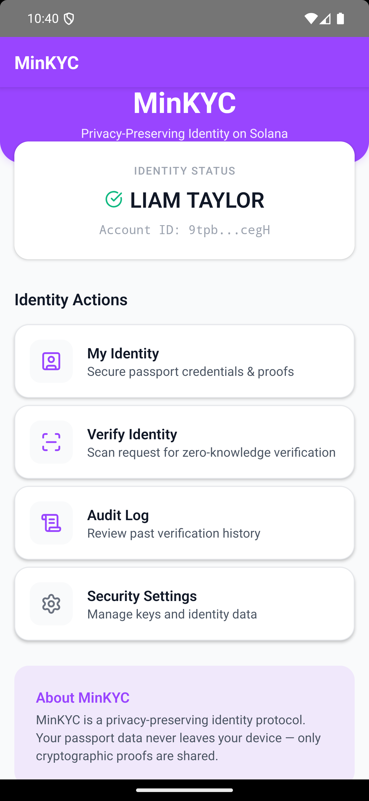
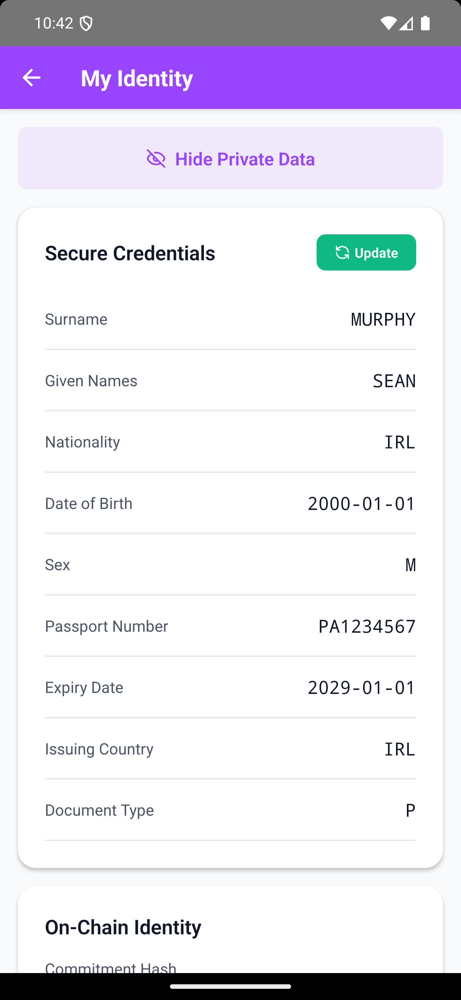
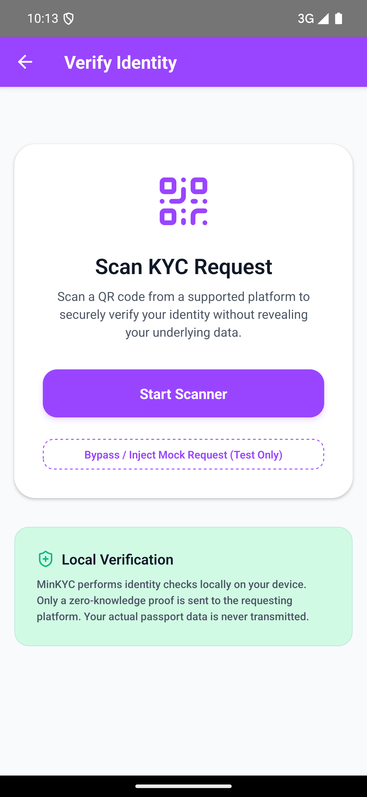
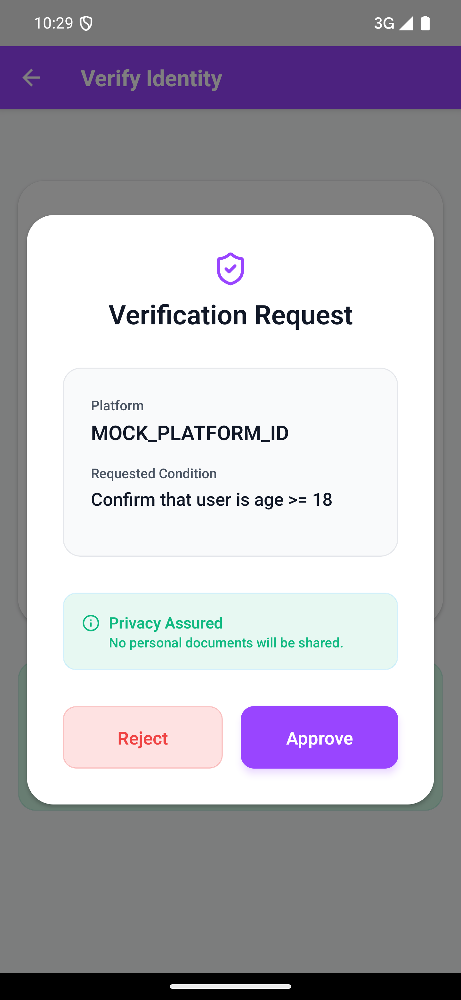

Superteam Ireland Submission
Direct Reference Links:
This is my official submission for the Superteam Ireland Ideathon. While I cannot be physically at Dogpatch Labs today, I am actively participating in this guided ideation session to build a concrete foundation for the Solana Colosseum Hackathon starting in April. I am grateful for any feedback offered, as it will directly assist in refining the project for the global competition.
In the current internet landscape, your personal data is a toxic asset. Storing passports and IDs turns servers into high-value targets for hackers, creating a multi-million dollar liability for every platform.
In September 2025, Discord suffered a catastrophic data breach via a third-party support vendor (5CA/Zendesk). Over 2.1 million government ID photos were allegedly stolen, affecting users who had simply appealed for age verification. Discord confirmed that at least 70,000 highly sensitive documents were exposed.
The Lesson: If you hold the data, you will eventually lose the data. Platforms can no longer afford the "Trust Us" model of identity.
The average cost of a data breach in 2025 hit $4.88 Million globally. For U.S.-based entities, that cost skyrockets to over $10 Million per incident, including fines, forensic audits, and legal settlements.
New laws like the UK's Online Safety Act and Europe's GDPR mandate strict age verification but impose crippling penalties for data mismanagement. Platforms are caught between compliance and liability.
MinKYC moves the verification process to the "edge"—directly onto the user's mobile device—leveraging Noir ZK circuits and the hardware enclaves of modern smartphones.




I am targeting the most compliance-sensitive verticals in the Solana ecosystem first, where the cost of verification is currently high and the risk of centralization is a deterrent.
Platforms pay $0.50 per successful ZK verification. This replaces the expensive $2.00+ fees charged by traditional OCR services like Persona or Jumio.
A yearly subscription for platforms that offloads all data-handling liability. For a fixed fee, I provide the ZK-infrastructure and the platforms never touch an ID photo again.
To replace traditional APIs, KYC verifications must be instant and cheap. Solana's high throughput and sub-dollar fees allow for sub-second ZK proof verification and the minting of immutable audit receipts, creating a transparent yet private compliance trail.